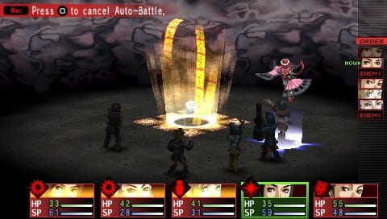
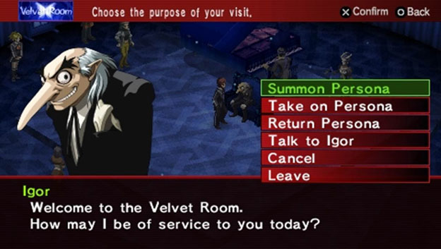
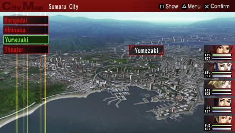
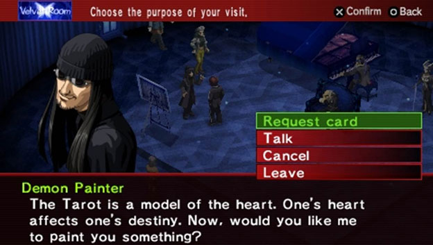
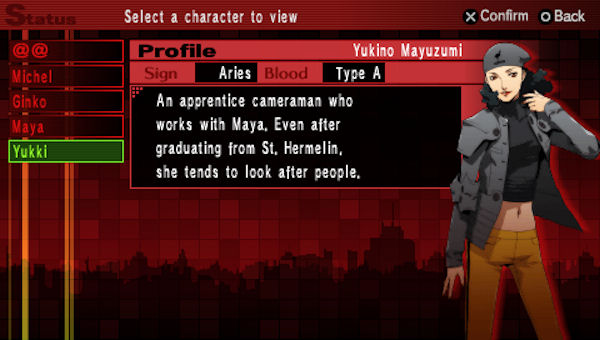
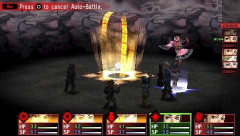
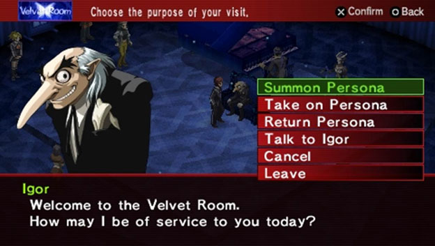
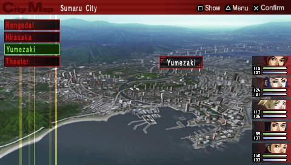
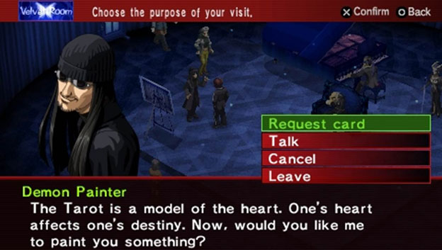
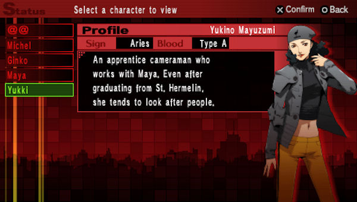

Atlus
Contacto
Persona 2 Innocent Sin es el segundo juego principal de la saga. El juego se lanzo originalmente en la PlayStation original, pero no salio a occidente y se quedo exclusivamente en Japon. Pero años mas tarde recivbio un remake para la PSP, el cual si llego en Ingles a occidente.
Innocent Sin trata sobre Tatsuya Suou, el protagonista, encangardonse sobre rumores en su ciudad haciendose realidad, debido al Joker. Por el camino, Tatsuya y sus amigos tiene que luchar contra Joker y avergiuar quien es la verdadera identidad detras de Joker, y tambien tiene que protejer su ciudad de la segunda aparicion de HItler, y su ejercito de robots Nazis conocidos como el "Ultimo Batallon".
Arcana(s): The Fool, Death, Judgement, Universe
Persona(s): Orpheus, Thanatos, Messiah, Orpheus Telos, Wild
Card
El protagonista es un estudiante de intercambio que se matricula
en el instituto Gekkoukan. Es un huerfano cuyos padres murieron en
un accidente de coche una decada antes del comienzo del juego.
Arcana: Lovers
Persona inicial: Io
Persona definitiva: Isis
Elementos principales: Viento y curacion
Yukari es una compañera de clase del protagonista. Es miembra del
club de tiro con arco, y por eso cuando exploran Tartarus utiliza
un arco como arma. Es una persona extrovertida y bastante popular,
aunque no deja que mucha gente sea cercana a ella.
Arcana: Magician
Persona inicial: Hermes
Persona definitiva: Trismegistus
Elementos principales: Ataques fisicos y Fuego
Junpei es el mejor amigo del protagonista. Suele hacer del payaso
de la clase para poder ocultar sus inseguridades. Como arma
utiliza una espada de dos manos que utiliza como un bate de
beisbol.
Arcana: Empress
Persona inicial: Penthesilea
Persona definitiva: Artemisia
Elemento principal: Hielo
Mitsuru es hija unica del CEO del Grupo Kirijo, una empresa
comercial que pèra a nivel multinacional. Tambien es la presidenta
del consejo estudiantil y una de las mejores estudiantes del
instituto Gekkoukan. Como arma utiliza espadas de una sola mano
como sables o un rapier.
Arcana: Emperor
Persona inicial: Polydeuces
Persona definitiva: Caesar
Elemento principal: Electricidad
Akihiko es el confiado capitan del equipo de boxeo del instituto.
Es muy trabajador y puede equilibrar sacar notas altas con su
entrenamiento constante como boxeador. Para luchar con las sombras
de Tartarus utiliza guantes de boxeo y garras.
Arcana: Justice
Persona inicial: Nemesis
Persona definitiva: Kala-Nemi
Elemento principal: Luz
Ken es el miembro mas joven de SEES, y uno de los dos que no
estudian en Gekkoukan. Es maduro pero tambien demasiado precoz por
su propio bien. Utiliza lanzas para luchas.
Cuarto juego de la saga principal y la version original de Persona 3, lanzada en el año 2006
Version mejoradad y extendida de la version original de PS2. Incluye mejoras en el gameplay y un epilogo llamado "The Answer" en donde jugamos como Aigis.
 








